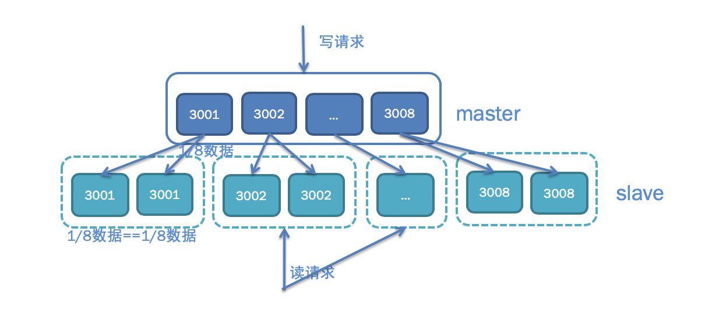
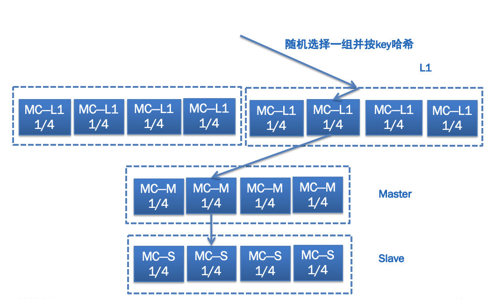
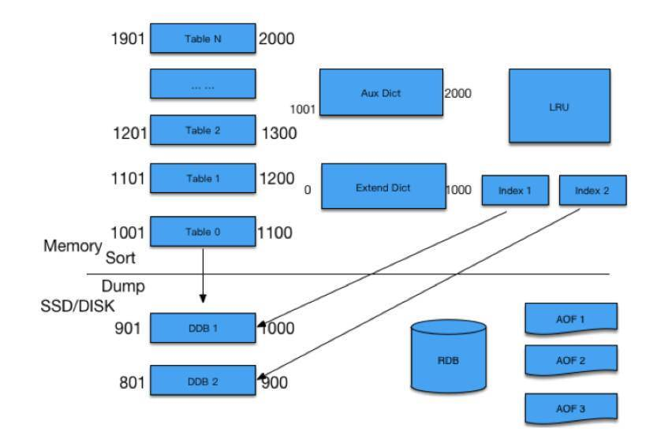
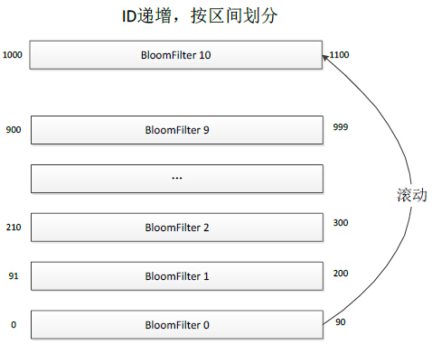
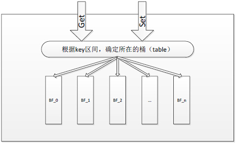
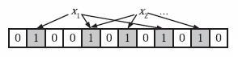
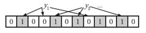

- 00 开篇词 微服务，从放弃到入门.md.html
- 01 到底什么是微服务？.md.html
- 02 从单体应用走向服务化.md.html
- 03 初探微服务架构.md.html
- 04 如何发布和引用服务？.md.html
- 05 如何注册和发现服务？.md.html
- 06 如何实现RPC远程服务调用？.md.html
- 07 如何监控微服务调用？.md.html
- 08 如何追踪微服务调用？.md.html
- 09 微服务治理的手段有哪些？.md.html
- 10 Dubbo框架里的微服务组件.md.html
- 11 服务发布和引用的实践.md.html
- 12 如何将注册中心落地？.md.html
- 13 开源服务注册中心如何选型？.md.html
- 14 开源RPC框架如何选型？.md.html
- 15 如何搭建一个可靠的监控系统？.md.html
- 16 如何搭建一套适合你的服务追踪系统？.md.html
- 17 如何识别服务节点是否存活？.md.html
- 18 如何使用负载均衡算法？.md.html
- 19 如何使用服务路由？.md.html
- 20 服务端出现故障时该如何应对？.md.html
- 21 服务调用失败时有哪些处理手段？.md.html
- 22 如何管理服务配置？.md.html
- 23 如何搭建微服务治理平台？.md.html
- 24 微服务架构该如何落地？.md.html
- 25 微服务为什么要容器化？.md.html
- 26 微服务容器化运维：镜像仓库和资源调度.md.html
- 27 微服务容器化运维：容器调度和服务编排.md.html
- 28 微服务容器化运维：微博容器运维平台DCP.md.html
- 29 微服务如何实现DevOps？.md.html
- 30 如何做好微服务容量规划？.md.html
- 31 微服务多机房部署实践.md.html
- 32 微服务混合云部署实践.md.html
- 33 下一代微服务架构Service Mesh.md.html
- 34 Istio：Service Mesh的代表产品.md.html
- 35 微博Service Mesh实践之路（上）.md.html
- 36 微博Service Mesh实践之路（下）.md.html
- 微博技术解密（上） 微博信息流是如何实现的？.md.html
- 微博技术解密（下）微博存储的那些事儿.md.html
- 结束语 微服务，从入门到精通.md.html
- 阿忠伯的特别放送 答疑解惑01.md.html
- 阿忠伯的特别放送 答疑解惑02.md.html
- 捐赠
微博技术解密（下）微博存储的那些事儿
今天是微博技术解密系列的第二期，我们来聊聊微博存储的使用经验。上一期“微博技术解密”我讲到微博主要使用了两大类存储：一类是数据库，主要以MySQL为主；一类是缓存，主要以Memcached和Redis为主。
今天我来分享一下微博在使用数据库和缓存方面的经验，也欢迎你给我留言一起切磋讨论。
MySQL
上一期我讲到微博Feed的存储使用了两层的结构，为了减少对MySQL数据库的访问压力，在前面部署了Memcached缓存，挡住了99%的访问压力，只有1%的请求会访问数据库。然而对于微博业务来说，这1%的请求也有几万QPS，对于单机只能扛几千QPS的MySQL数据库来说还是太大了。为此我们又对数据库端口进行了拆分，你可以看下面的示意图，每个用户的UID是唯一的，不同UID的用户按照一定的Hash规则访问不同的端口，这样的话单个数据库端口的访问量就会变成原来的1/8。除此之外，考虑到微博的读请求量要远大于写请求量，所以有必要对数据库的读写请求进行分离，写请求访问Master，读请求访问Slave，这样的话Master只需要一套，Slave根据访问量的需要可以有多套，也就是“一主多从”的架构。最后考虑到灾备的需要，还会在异地部署一套冷备的灾备数据库，平时不对外提供线上服务，每天对所有最新的数据进行备份，以防线上数据库发生同时宕机的情况。

Memcached
在MySQL数据库前面，还使用了Memcached作为缓存来承担几百万QPS的数据请求，产生的带宽问题是最大挑战。为此微博采用了下图所示的多层缓存结构，即L1-Master-Slave，它们的作用各不相同。
L1主要起到分担缓存带宽压力的作用，并且如果有需要可以无限进行横向扩展，任何一次数据请求，都随机请求其中一组L1缓存，这样的话，假如一共10组L1，数据请求量是200万QPS，那么每一组L1缓存的请求量就是1/10，也就是20万QPS；同时每一组缓存又包含了4台机器，按照用户UID进行Hash，每一台机器只存储其中一部分数据，这样的话每一台机器的访问量就只有1/4了。
Master主要起到防止访问穿透到数据库的作用，所以一般内存大小要比L1大得多，以存储尽可能多的数据。当L1缓存没有命中时，不能直接穿透到数据库，而是先访问Master。
Slave主要起到高可用的目的，以防止Master的缓存宕机时，从L1穿透访问的数据直接请求数据库，起到“兜底”的作用。

Redis
微博的存储除了大量使用MySQL和Memcached以外，还有一种存储也被广泛使用，那就是Redis。并且基于微博自身的业务特点，我们对原生的Redis进行了改造，因此诞生了两类主要的Redis存储组件：CounterService和Phantom。
1. CounterService
CounterService的主要应用场景就是计数器，比如微博的转发、评论、赞的计数。早期微博曾采用了Redis来存储微博的转发、评论、赞计数，但随着微博的数据量越来越大，发现Redis内存的有效负荷还是比较低的，它一条KV大概需要至少65个字节，但实际上一条微博的计数Key需要8个字节，Value大概4个字节，实际上有效的只有12个字节，其余四十多个字节都是被浪费的。这还只是单个KV，如果一条微博有多个计数的情况下，它的浪费就更多了，比如转评赞三个计数，一个Key是long结构，占用8个字节，每个计数是int结构，占用4个字节，三个计数大概需要20个字节就够了；而使用Redis的话，需要将近200个字节。正因为如此，我们研发了CounterService，相比Redis来说它的内存使用量减少到原来的1/15～1/5。而且还进行了冷热数据分离，热数据放到内存里，冷数据放到磁盘上，并使用LRU，如果冷数据重新变热，就重新放到内存中。
你可以看下面的示意图，CounterService的存储结构上面是内存下面是SSD，预先把内存分成N个Table，每个Table根据微博ID的指针序列，划出一定范围。任何一个微博ID过来先找到它所在的Table，如果有的话，直接对它进行增减；如果没有，就新增加一个Key。有新的微博ID过来，发现内存不够的时候，就会把最小的Table dump到SSD里面去，留着新的位置放在最上面供新的微博ID来使用。如果某一条微博特别热，转发、评论或者赞计数超过了4个字节，计数变得很大该怎么处理呢？对于超过限制的，我们把它放在Aux Dict进行存放，对于落在SSD里面的Table，我们有专门的Index进行访问，通过RDB方式进行复制。

2. Phantom
微博还有一种场景是“存在性判断”，比如某一条微博某个用户是否赞过、某一条微博某个用户是否看过之类的。这种场景有个很大的特点，它检查是否存在，因此每条记录非常小，比如Value用1个位存储就够了，但总数据量又非常巨大。比如每天新发布的微博数量在1亿条左右，是否被用户读过的总数据量可能有上千亿，怎么存储是个非常大的挑战。而且还有一个特点是，大多数微博是否被用户读过的存在性都是0，如果存储0的话，每天就得存上千亿的记录；如果不存的话，就会有大量的请求最终会穿透Cache层到DB层，任何DB都没有办法抗住那么大的流量。
假设每天要存储上千亿条记录，用原生的Redis存储显然是不可行的，因为原生的Redis，单个KV就占了65个字节，这样每天存储上千亿条记录，需要增加将近6TB存储，显然是不可接受的。而用上面提到的微博自研的CounterService来存储的话，一个Key占8个字节，Value用1个位存储就够了，一个KV就占大约8个字节，这样每天存储上千亿条记录，需要增加将近800GB存储。虽然相比于原生的Redis存储方案，已经节省了很多，但存储成本依然很高，每天将近1TB。
所以就迫切需要一种更加精密的存储方案，针对存在性判断的场景能够最大限度优化存储空间，后来我们就自研了Phantom。
就像下图所描述的那样，Phantom跟CounterService一样，采取了分Table的存储方案，不同的是CounterService中每个Table存储的是KV，而Phantom的每个Table是一个完整的BloomFilter，每个BloomFilter存储的某个ID范围段的Key，所有Table形成一个列表并按照Key范围有序递增。当所有Table都存满的时候，就把最小的Table数据清除，存储最新的Key，这样的话最小的Table就滚动成为最大的Table了。

下图描述了Phantom的请求处理过程，当一个Key的读写请求过来时，先根据Key的范围确定这个Key属于哪个Table，然后再根据BloomFilter的算法判断这个Key是否存在。

这里我简单介绍一下BloomFilter是如何判断一个Key是否存在的，感兴趣的同学可以自己搜索一下BloomFilter算法的详细说明。为了判断某个Key是否存在，BloomFilter通过三次Hash函数到Table的不同位置，然后判断这三个位置的值是否为1，如果都是1则证明Key存在。
来看下面这张图，假设x1和x2存在，就把x1和x2通过Hash后找到的三个位置都设置成1。

再看下面这张图，判断y1和y2是否存在，就看y1和y2通过Hash后找到的三个位置是否都是1。比如图中y1第二个位置是0，说明y1不存在；而y2的三个位置都是1，说明y2存在。

Phantom正是通过把内存分成N个Table，每一个Table内使用BloomFilter判断是否存在，最终每天使用的内存只有120GB。而存在性判断的业务场景最高需要满足一周的需求，所以最多使用的内存也就是840GB。
总结
今天我给你讲解了微博业务中使用范围最广的三个存储组件：一个是MySQL，主要用作持久化存储数据，由于微博数据访问量大，所以进行了数据库端口的拆分来降低单个数据库端口的请求压力，并且进行了读写分离和异地灾备，采用了Master-Slave-Backup的架构；一个是Memcached，主要用作数据库前的缓存，减少对数据库访问的穿透并提高访问性能，采用了L1-Master-Slave的架构；一个是Redis，基于微博自身业务需要，我们对Redis进行了改造，自研了CounterService和Phantom，分别用于存储微博计数和存在性判断，大大减少了对内存的使用，节省了大量机器成本。
专栏更新到这里就要跟同学们说再见了，感谢你们在过去大半年时间里的陪伴，值此新春到来之际，老胡给您拜年啦，恭祝各位同学在新的一年里，工作顺顺利利，生活开开心心！
© 2019 - 2023 Liangliang Lee. Powered by gin and hexo-theme-book.